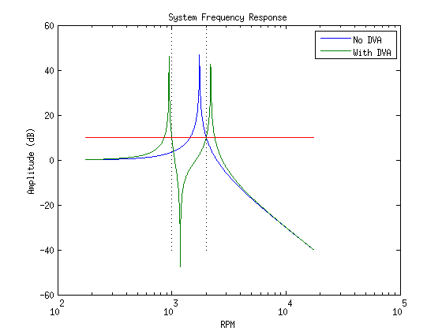

Contents
MAE 6258 HW 4
clear
close
F= 13;
w = 20;
m= 75;
k= 2500;
wn = sqrt(m/k);
d_st = F/k;
Xmax = .002;
wa = w;
p=wa/wn;
r=w/wn;
ma = F/(Xmax*wa^2);
ka = wa^2*ma;
mu = ma/m;
fn1 = @(r1) abs(p^2-r1.^2)./abs((1-r1.^2).*(p^2-r1.^2)-mu*p^2*r1.^2) - 1;
syms r
fn = abs(p^2-r^2)/abs((1-r^2)*(p^2-r^2)-mu*p^2*r^2);
rhats = solve(1 == fn, r)
rhats =
127.36788615149274177968542910426
127.36648783028533452778863834998
1.2821074536113069596109796856473
0
-127.36788615149274177968542910426
-127.36648783028533452778863834998
-1.2821074536113069596109796856473
0
Problem 2
clear
close
wn = 1750*2*pi/60;
ma = 5;
r_a = @(mu) (mu+2-sqrt((mu+2)^2-4))/2 - (1400/1750)^2;
r_b = @(mu) (mu+2+sqrt((mu+2)^2-4))/2 - (2190/1750)^2;
mu1 = fzero(r_a, 2);
mu2 = fzero(r_b, 2);
mu_avg = (mu1+mu2)/2;
m_eff = ma/mu_avg;
r1 = 1000/1750;
r2 = 2000/1750;
A = sqrt(10);
phi1 = (-1/A+r1^2-1)^(-1);
phi2 = (1/A+r2^2-1)^(-1);
p_sq = r1^2*r2^2*(phi2-phi1)/(r2^2*phi2 - r1^2*phi1);
mu =(r2^2 - r1^2)/(r1^2*r2^2*(phi2 -phi1));
wa = sqrt(p_sq)*wn
ma = mu*m_eff
k1 = wn^2*m_eff;
r = logspace( -1, 1, 1000);
w = r*1750;
X_1 = 1./abs(1 - r.^2);
X_2 = abs(p_sq - r.^2)./abs((1-r.^2).*(p_sq-r.^2)-mu*p_sq.*r.^2);
semilogx(w, 20*log10(X_1), w, 20*log10(X_2), w, repmat(10, [1 1000]))
x = linspace(-40, 60, 100);
y1 = repmat(1000, size(x));
y2 = repmat(2000, size(x));
hold on
semilogx(y1, x, 'k:', y2, x, 'k:')
title('System Frequency Response')
xlabel('RPM')
ylabel('Amplitude (dB)')
legend('No DVA', 'With DVA')
wa =
124.2398
ma =
21.5567

Problem 4
k1 = 40000;
m=1000;
Ft = 100;
F = 70;
gamma = .5*(Ft/F - 1);
zeta = sqrt(2*(1+2*gamma)/gamma)/(4*(1+gamma));
c = zeta*2*sqrt(m*k1)
k2 = k1/gamma
c =
9.5093e+03
k2 =
1.8667e+05